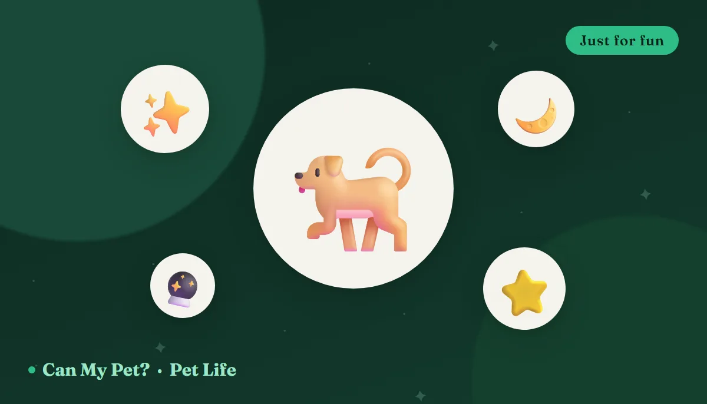

Dog Zodiac Signs: What Your Dog's "Sign" Says About Them
🪄 Just for fun — this one's entertainment, not science
Is your Leo Labrador a total drama star? Is your Virgo terrier weirdly tidy about their toys? Almost certainly a coincidence — but a delightful one. Matching your dog's birth month to a star sign is pure play, and that's exactly why it's fun. Below is a warm, tongue-in-cheek tour of all twelve signs, what each "dog personality" might look like, and a favorite treat to match. Then, because we're CanMyPet, we'll tell you what actually shapes your dog's temperament.
How to find your dog's sign
Easy: use your dog's date of birth (or adoption-estimated birthday) and match it to the ranges below, exactly like you would for a person. Don't know the exact day? Pick the closest guess, or just choose the sign whose personality sounds most like your dog — there are no wrong answers in a game with no rules. Not sure how old your pup even is? Our pet age calculator can help you ballpark it.
The 12 dog zodiac signs
♈ Aries — The Zoomie Machine
Bold, bouncy, and always first out the door. The Aries dog turns every walk into a mission and every squirrel into a personal nemesis. Fearless to a fault, they'll leap before they look — then look very proud of it.
🍗 Treat match: a hard-earned bite of plain chicken after all that sprinting.
♉ Taurus — The Comfort Connoisseur
Steady, stubborn, and deeply committed to the good life: warm beds, full bowls, and a sunbeam that hits the couch just right. Try to move a Taurus dog off their favorite spot and you'll meet the immovable object of the zodiac.
🎃 Treat match: a cozy spoonful of plain pumpkin — homey and gentle on the tummy.
♊ Gemini — The Social Butterfly
Curious, chatty, and easily delighted by literally everything. The Gemini dog wants to meet every human, sniff every lamppost, and try every game — ideally all at once. Never a dull moment, occasionally a short attention span.
🫐 Treat match: a scatter of blueberries to chase around the kitchen floor.
♋ Cancer — The Velcro Sweetheart
Sensitive, devoted, and never more than three feet from your side. The Cancer dog feels your moods before you do and offers a chin on the knee at exactly the right moment. Home is wherever you are — and they'd rather you never leave.
🥜 Treat match: a lick of xylitol-free peanut butter — comfort in a spoon.
♌ Leo — The Main Character
Confident, dramatic, and absolutely certain the party started when they entered. The Leo dog wants an audience, poses for photos, and will sigh theatrically if the belly rubs pause. Big heart, bigger presence.
🧀 Treat match: a small cube of cheese — a star deserves a treat with flair.
♍ Virgo — The Tidy Perfectionist
Thoughtful, particular, and quietly running the household. The Virgo dog has Opinions about their routine, lines their toys up "just so," and gives you a pointed look when dinner is four minutes late. Reliable, gentle, and secretly the smartest one in the room.
🥕 Treat match: a neat, crunchy carrot stick — orderly and satisfying.
♎ Libra — The Peacemaker
Easygoing, charming, and allergic to conflict. The Libra dog gets along with everyone at the park, shares the toy (mostly), and just wants the whole household to be happy and balanced. The diplomat of the dog world.
🍎 Treat match: a fair, evenly-shared slice of apple (seeds removed).
♏ Scorpio — The Loyal Mystery
Intense, devoted, and impossible to fool. The Scorpio dog bonds hard with their person and watches everyone else with a knowing side-eye. Fiercely loyal once you've earned it — and they never forget who dropped the good snacks.
🐟 Treat match: a rich flake of cooked salmon — deep and unforgettable.
♐ Sagittarius — The Adventurer
Free-spirited, optimistic, and up for anything that involves the great outdoors. The Sagittarius dog lives for road trips, new trails, and rolling in something unspeakable. Boundless enthusiasm; questionable impulse control.
🍠 Treat match: a chewy strip of sweet potato for the long road ahead.
♑ Capricorn — The Old Soul
Calm, dignified, and wise beyond their years even as a puppy. The Capricorn dog takes life seriously, learns the rules fast, and gives you a look that says "I've seen things." The steady, patient elder statesman of the pack.
🍗 Treat match: a no-nonsense bite of plain chicken — classic and dependable.
♒ Aquarius — The Quirky Original
Independent, inventive, and gloriously weird. The Aquarius dog has one bizarre habit no trainer can explain, ignores the toy you bought in favor of a bottle cap, and marches to a drum only they can hear. A true individual.
🎃 Treat match: an unexpectedly great spoon of pumpkin — simple and a little offbeat.
♓ Pisces — The Dreamy Cuddler
Gentle, intuitive, and made of pure feelings. The Pisces dog naps in sunbeams, sighs contentedly, and seems to drift through a soft private world where every human is a friend and every blanket is a nest.
🫐 Treat match: a handful of soft blueberries — sweet and easygoing.
So what actually shapes a dog's personality?
Here's the part we can stand behind. Dog personality is real and measurable — researchers using tools like the University of Pennsylvania's C-BARQ questionnaire have shown that dogs display consistent individual traits across time and situations. But the stars have nothing to do with it. What genuinely writes your dog's character comes down to a few big, well-studied factors:
If you want the evidence-based version of "what type is my dog," we wrote a whole guide on it: dog personality types, and which one is yours. It covers the five science-backed clusters real researchers found in a study of more than 70,000 dogs. And if you're curious how your dog "talks," reading their body language tells you far more than any horoscope ever could.
Fun ways to play with your dog's "sign"
Half the joy is the game itself. Snap a photo captioned with your dog's sign, pick a themed name from our pet name generator (a "Luna" for a dreamy Pisces, a "Rex" for a bold Aries), or make up your own horoscope for the week: "Mercury is in retrograde, so your Gemini will bark at the vacuum with extra passion." It's silly, it's harmless, and it's a lovely excuse to celebrate exactly how weird and wonderful your dog already is.
Frequently asked questions
Is the dog zodiac real?
No — it's purely for fun. There's no scientific evidence that a dog's birth date influences its personality. Real dog temperament is shaped by genetics, breed, early socialization, training and daily experience. Enjoy the zodiac as entertainment, not as a guide to your dog's behavior.
How do I know my dog's zodiac sign?
Match your dog's date of birth (or best-estimate birthday) to the same date ranges used for people, listed above. If you don't know their birthday, just pick the sign whose description sounds most like your dog — it's a game, so there are no wrong answers.
What actually determines my dog's personality?
Mostly genetics and breed tendencies, the quality of early socialization (roughly weeks 3–14), and ongoing training, routine and life experience. Our dog personality types guide covers the real, research-backed picture.
Can I give my dog the "treat match" for their sign?
The treats we listed are all dog-safe in small amounts — but portion matters, and every dog is different. Keep treats to about 10% of daily calories and check any new food in our food checker first. This guide is for information and fun, not veterinary advice.